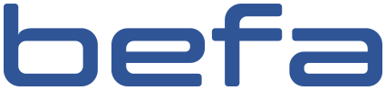
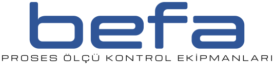
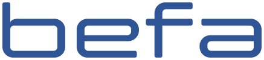
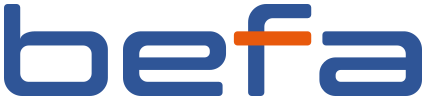
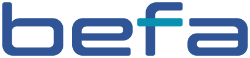
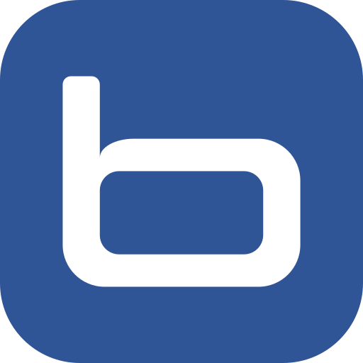

A1
Mevcut logo (vektörel)
Eski logonun vektörel yeniden çizimi; harf biçimleri ve oranları aynı.

Küçük boy (site üst bandı, yaklaşık 180 px):
Her gruptan bir seçenek seçip kodlarını (örnek: A1, B1, C1) Burak Bey'e iletmeniz yeterli.
Eski logonun vektörel yeniden çizimi; harf biçimleri ve oranları aynı.

Mevcut logo ve altında "PROSES ÖLÇÜ KONTROL EKİPMANLARI" yazısı.


Aynı harf iskeleti; daha ince çizgiler, biraz daha açık harf araları, tek tip köşe yuvarlaklığı.

Logonun soluna sade bir kadran (gösterge) simgesi.
Örnekler mevcut logo (A1) üzerinde gösterilmiştir.
Mevcut kurumsal mavi (#2f5597), tek renk.
Kurumsal mavi; f harfinin yatay çizgisi turuncu (#e8590c).

Kurumsal mavi; f harfinin yatay çizgisi camgöbeği (#0891b2).

Logodaki b harfi tek başına.
Mavi yuvarlatılmış kare üstünde beyaz b.
